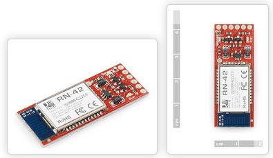
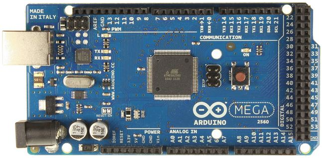
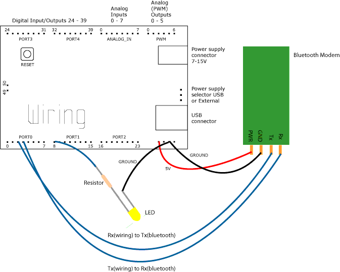
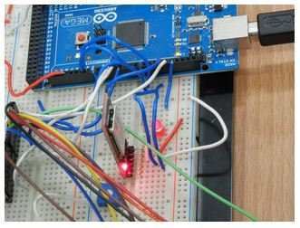
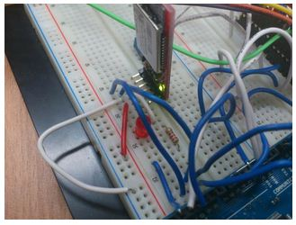

Arduino 專題分享 – 利用藍牙模組達到兩台 arduino 互相通訊 (作者：許肇驛)
我所實驗用的藍牙模組為 P-BSMi Silver 藍牙模組

我所使用的板子為 Arduino MEGA 2560


圖、ARDUINO 官方提供的藍牙接線圖
照著官方提供之藍牙接線圖，接完後
我們開始設定兩塊 arduino 端的程式，藍牙通訊的關係為 Master - Slave，選定一塊arudnio版作為我們的master端，並編寫程式
程式流程說明
我們的master端 會尋找指定的配對對象，當配對成功後, slave 端會先傳送 'y' 字元 給 master 端，當 master 端收到後作為確認後， 進入 autosend() 副程式，開始傳送'a' 's' 'd' 三個字元給slave端的藍牙，當slave端收到後 會依照收到的順序做不一樣的 led 明滅方式。
- 'a' 做五次明滅
- 's' LED恆亮
- 'd' LED恆滅
//Master code
/************
Created 2012
by 許肇驛 Hsu Chao-YI
E-mail: ps2steve2005@hotmail.com
This code is use for communication between BT and BT with each arduino board
***********/
char cometemp;
void setup() {
Serial3.begin(9600);
Serial3.print("$$$");
delay(100);
Serial3.println("SM,1");
delay(100);
Serial3.println("C,00066648548F");
delay(100);
Serial3.println("---");
}
void loop(){
if(Serial3.available())
{
cometemp = Serial3.read();
if (cometemp ='y'){
autosend();
}
else {
Serial.print("Can't no find the bluetooth device.");
Serial.print("Try again after 5 seconds..");
delay(5000);
Serial3.print("$$$");
delay(100);
Serial3.println("SM,1");
delay(100);
Serial3.println("C,00066648548F");
delay(100);
Serial3.println("---");
}
}
}
void autosend(){
Serial3.print('a');
Serial.print("Sent a. ");
delay(300);
Serial3.print('s');
Serial.print("Sent s. ");
delay(300);
Serial3.print('d');
Serial.print("Sent d");
delay(300);
}程式註解:
- Serial.available() - serial 收到訊息
- 依照 RN42 官方指令說明書 為進入命令模式
- SM,
<5,4,3,2,1,0>-設定此藍牙模組的模式- (0=slave, 1=master,2=trigger, 3=auto, 4=DTR, 5=ANY)
- Example : “SM,1” 設定藍牙模組為master端
- C,
<address>-設定要指定去配對的藍牙模組, address 為另外一端的mac位址- --- -離開命令模式 exit command mode
- Serial.print() -
- print 東西 藉由 serial 腳，因為我的藍牙模組 是接在 Serial3 腳為 因此若要 print 東西給那個 pin 腳上所插的東西 就只要改成 Serial.print
- 這裡有兩個Serial(Serial, Serial3) 我使用Serial是因為想要在 serial monitor上也可以顯示
- Serial.println() - 跟 Serial.print 一樣，只是多了換行的功能。
- Serial3.read - 讀取Serial3 腳位接收到的資料
- delay() - () 裡面的數字單位為毫秒 , 一秒=1000 毫秒 因此若要 delay 一秒 就是 delay(1000)
//Slave code
/************
Created 2012
by 許肇驛 Hsu Chao-YI
E-mail: ps2steve2005@hotmail.com
This code is use for communication between BT and BT with each arduino board.
***********/
int ledPin= 13;
char cometemp;
void setup() {
pinMode(ledPin,OUTPUT);
Serial.begin(9600);
Serial.print("$$$");
delay(100);
Serial.println("SM,0");
delay(100);
Serial.println("---");
}
void loop()
{
if( Serial.available())
{
Serial.print('y');
cometemp= Serial.read();
switch(cometemp){
case a:
for(int i=0;i<=5;i++){
digitalWrite(ledPin,HIGH);
delay(400);
digitalWrite(ledPin,LOW);
delay(300);}
break;
case s:
digitalWrite(ledPin,HIGH);
delay(5000);
break;
case d:
digitalWrite(ledPin,LOW);
delay(5000);
break;}
}}

圖、當在尋找配對的裝置時 會紅燈閃爍

圖、配對成功後會顯示綠燈
參考文獻
- Wireless communication with PC and Arduino board using bluetooth
- Roving Networks Bluetooth™ Product User Manual (PDF)
- Arduino Mega 2560
【本文作者為許肇驛，原文網址為： http://choyihsu.blogspot.tw/2012/12/arduino.html ，由陳鍾誠編輯後納入本雜誌】